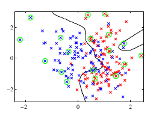

- Notation
- Functional Margin
- Geometric Margin
- Functional and Geometric Margin
- Optimal Margin Classifier
- SVM
- L1-Norm Soft Margin SVM
The Support Vector Machine allows you to find potential non-linear decision boundaries:

SVM provides an algorithm that:
- Maps a vector of features to a vector of features of a much higher dimension (manually picking the new features is difficult, that is why we automate it with these types of algorithms) \begin{align} \begin{bmatrix} x_1 \\ x_2 \\ \end{bmatrix} \rightarrow \begin{bmatrix} x_1 \\ x_2 \\ x_1^2 \\ x_2^2 \\ x_1\cdot x_2 \\ \vdots \end{bmatrix} \end{align}
- Applies a linear classifier over the high dimensional features (Note: if you apply logistic regression to high dimensional vectors then it can learn non-linear decision boundaries)
- Labels: \(y^{(i)} \in \{-1, +1\}\)
- Now the hypothesis outputs a \(1\) or a \(-1\), which means:
That is, now instead of a smooth transition of probabilities from zero to one, we have a hard transition between \(1\) and \(-1\).
- Weights: now the weights \(\Theta \in \mathbb{R}^{(n+1)}\), where \(\theta_0 = 1\) are divided into: \(w \in \mathbb{R}^{(n)}\) and \(b \in \mathbb{R}\). Thus we drop the convention of assigning \(x_0 = 1\).
- Also now the hypothesis function is defined as: \(h_{w,b}(x) = g(w^Tx + b) = g((\sum_{i=1}^n w_i x) + b)\)
As you may have picked up we can stablish an equality between both margins:
\begin{align} \gamma^{(i)} = \frac{\hat{\gamma}^{(i)}}{||w||} \end{align}To apply kernels first we will lay out the kernel trick:
- Write the algorithm in terms of the inner products of the training examples \(\langle x^{(i)}, x^{(j)} \rangle=(\langle x, z \rangle)\)
- Let there be a mapping \(x \rightarrow \phi(x)\), where \(\phi(x)\) is a high dimensional feature vector.
- Find a way to compute \(K(x, z) = \phi(x)^T\phi(z)\), even if \(x, z\) are very high dimensional features vectors (which would be very computationally expensive). Where \(K(x, z)\) is denoted as the kernel function
- Replace \(\langle x, z \rangle\) with \(K(x, z)\)
- Given \(x, z \in \mathbb{R}^n\), where:
We define the mapping \(\phi(x) \in \mathbb{R}^{n^2}\) as follows:
\begin{align} \phi(x) = \begin{bmatrix} x_ix_i \\ \end{bmatrix} \end{align}\(\forall i, j\) with \(1 \leq i,j \leq n\)
So we have
\begin{align} K(x, z) = \phi(x)^T \phi(z) = \sum_{i=1}^{n^2} \phi(x)_i \phi(z)_i = \sum_{i=1}^n \sum_{j=1}^n (x_ix_j) (z_iz_j) \end{align}Which would take \(O(n^2)\) time to compute. But, observe that:
\begin{align} (x^Tz)^2 = (x^Tz)^T(x^Tz) = \sum_{i=1}^n\sum_{j=1}^n (x_iz_i)(x_jz_j) = \sum_{i=1}^n\sum_{j=1}^n (x_ix_j)(z_iz_j) \end{align}whick takes \(O(n)\) time to compute.
So we conclude that the kernel can be defined as \(K(x, z) = (x^Tz)^n\)
-
Given \(x, z \in \mathbb{R}^n\)
- \(K(x, z) = (x^Tz + c)^2\)
- Where the mapping function \(\phi\) is defined as: given
Then:
\begin{align} \phi(x) = \begin{bmatrix} x_1x_1 \\ x_1x_2 \\ x_2x_1 \\ x_2x_2 \\ \sqrt{2c}x_1 \\ \sqrt{2c}x_2 \\ \end{bmatrix} \end{align}-
Given \(x, z \in \mathbb{R}^n\)
- \(K(x, z) = (x^Tz+ c)^d\)
- Where \(\phi(x)\) contains the \(\binom{n+d}{d}\) combinations of monomials of degree d. (Note: a monomial of degree 3 could be \(x_1x_2x_3\) or \(x_1x_2^2\), etc)
To test is a Kernel is valid we use Mercer's Theorem that says:
K is a valid kernel function (i.e. \(\exists \phi\) such that \(K(x, z) = \phi(x)^T\phi(z)\)) if and only if for any \(d\) points \(\{x^{(1)}, \cdots , x^{(d)}\}\) the corresponding kernel matrix \(K\) is positive semi-definite, that is \(K \geq 0\)
We are going to prove the first part of this theorem:
Given examples \(\{x^{(1)}, \cdots , x^{(d)}\}\), let \(K \in \mathbb{R}^{d\times d}\), be the kernel matrix, such that
\begin{align} K_{ij} = K(x^{(i)}, x^{(j)}) \end{align}Then, if \(K\) is a valid kernel:
\begin{align} z^TKz = \sum_{i=1}^d \sum_{j=1}^d z_i^T K_{ij} z_j = \sum_{i=1}^d \sum_{j=1}^d z_i^T \phi(x^{(i)})^T \phi(x^{(j)}) z_j = \end{align}We expand \(\phi(x^{(i)})^T \phi(x^{(j)})\) as follows:
\begin{align} = \sum_{i=1}^d \sum_{j=1}^d z_i^T \left[\sum_{k=1}^d (\phi(x^{(i)}))_k (\phi(x^{(j)}))_k\right] z_j = \end{align}Now, if we rearrange the sums:
\begin{align} = \sum_{k=1}^d \left[\sum_{i=1}^d z_i (\phi(x^{(i)}))_k\right]^2 \end{align}So, because the power of two of any real number is a positive number, and the sum of positive numbers is positive we derive:
\begin{align} \sum_{k=1}^d \left[\sum_{i=1}^d z_i (\phi(x^{(i)}))_k\right]^2 \geq 0 \end{align}Which means that \(K \geq 0\), hence \(K\) is a positive, semi-definite matrix
The kernel trick is more algorithms, not only in SVM. Because, if you have any algorithm written in terms of \(\langle x^{(i)}, x^{(j)} \rangle\), you can apply the kernel trick to it.
Some of the algorithms that can be re-written like this are:
- Lineal Regression
- Logistic Regression
- GDM
- PCA
- etc.
It may be the case where you map your data to a very high dimensional space, but it is still not linearly separable, or the decision boundary becomes too complex:
In order to avoid this we will use a modification of the basic algorithm called L1-Norm Soft Margin SVM. With this new algorithm the optimization problem becomes
subject to
\begin{align} y^{(i)}(w^Tx^{(i)} + b) \geq 1 - \xi_i \end{align} \begin{align} \xi_i \geq 0, i = 1, \cdots, m \end{align}Note that if \(x^{(i)}\) is classified correctly then \(y^{(i)}(w^Tx^{(i)} + b) \geq 0\) and therefore satisfies \(y^{(i)}(w^Tx^{(i)} + b) \geq 1 - \xi_i\), because \(\xi_i \geq 0\)
Before the modification, the restriction forced the functional margin to be at least 1, however after the modification, because \(\xi_i\) is positive we relax the restriction.
Also, we do not want \(\xi_i\) to be too big, that is why it is added to the optimization objective as a cost.
With the addition of \(\xi_i\) we are allowing some examples to have a functional margin less than 1, by setting \(\xi_i \geq 0\). For example look at the example \(x^{(i)}\) which has \(\xi_i = 0.5\)